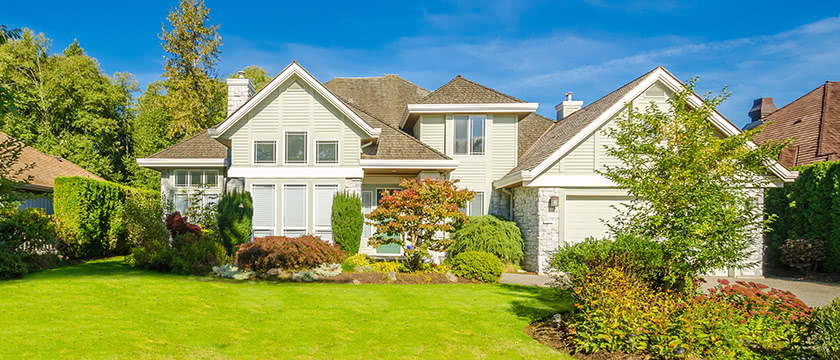

Most parts of the house often require maintenance after some time. We strive to come up with material and services that significantly decrease the need for maintenance and replacement. Stucco removal is a maintenance service that we now provide at our company to the residents of Collingswood, NJ. Our contractors are well-trained for the efficient removal of stucco from your ceilings without leaving any of it behind. They pay attention to the smallest details. They work hard to make sure every inch of your roof is attended and smoothed out. The stucco removal services provided by our contractors are long-lasting, freeing you from worries of the appearance of stucco anytime soon. It results in smooth and fresh looking ceilings.
What is stucco?
Stucco is the swollen and raised areas resembling the shape of popcorn, usually appear on old and outdated ceilings. The ceilings subjected to moisture commonly develop stucco. Generally, stucco appears when old roofs wear out and start to come off. But, now we have a solution for the residents of Collingswood, NJ, who may be facing this problem.
Why should you get stucco removal services by our company in Collingswood, NJ?
We are continually working to widen our horizon and provide as many homemaking and maintenance services as possible for your house in Collingswood, NJ. Stucco removal is one of these services that save you from many disadvantages.

Uneven texture
The appearance of stucco on your ceilings at your house in Collingswood, NJ, can completely ruin the smooth surface of your ceilings. Stucco appears unevenly on different areas of your ceiling and destroys it. It can decrease the value of your house. We provide stucco removal services in Collingswood, NJ, to keep your ceiling looking fresh and smooth.
Decreased appeal
We understand how every homeowner cares about the attractiveness and the beauty of their house. To preserve the beauty of your home, we strive and go to different lengths to keep you satisfied. The appearance of stucco can be one of the most unwanted consequences of an outdated ceiling that can decrease the appeal of the insides of your house. You can book us for the stucco removal services for your home to get a newer looking ceiling that keeps the beauty of your home in Collingswood, NJ, intact.
Dust
The appearance of stucco on your ceiling can create a mess in your house, and it may require cleaning more than usual. It is also very dangerous to your health, especially kids. It is because the stucco may come off and create increased dust on the floors and in the area. Breathing the air full of dust may give you and your kids various respiratory diseases and may trigger allergies as well. This is why it is crucial to get stucco removal services if you suspect its appearance at your house in Collingswood, NJ.